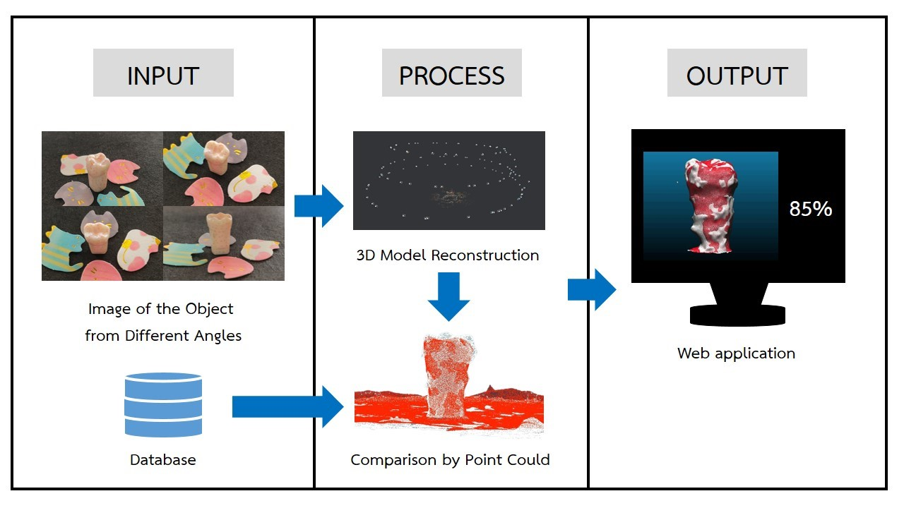

3D Model Reconstruction Of Plastic Tooth For Practicing Tooth Restorative Skill Using Photogrammetry Technique

Example Results: Webpage(Prototype)
Abstract

Prosthodontics is a dental procedure aimed at correcting various problems of the teeth such as Dental implants, Tooth crowns, Tooth drilling, Dentures, Tooth fillings.
The practice of prosthodontics requires high skill and expertise. Therefore, dental students have to have regular training before practicing with real patients.
To practice prosthetic skills, dental students have a simulation tool for prosthodontics that has been developed using Mixed Reality or MR is combining Augmented Reality (AR) and Virtual Reality (VR) technologies.
And some simulation tools to help with it. Nowadays this technology is quite expensive, including Various equipment used to operate in conjunction with high-cost softwares.
As a result, most of the students still rely on the practice of using plastic prosthetics and assessments by dental specialists.
The review and evaluation of the practice of prosthetics using plastic prosthetics take a long time.
As a result, the teachers who inspect and assess the results are not sufficient to examine the performance of the students.
Sometimes the teacher has a limited number of examinations and assessments for students.
Therefore, students are unable to practice the skills they need because of the time limitations in the examination and evaluation.
So, we developed a method for creating 3D models of a dental implant from a photograph using the Photogrammetry technique and develop methods for examining and evaluating skills in prosthodontics.
Artificial teeth that look like real teeth are difficult to model in 3D because of their small size, glossy surface,
and pattern-less. In order to overcome that problem, we design an image acquisition procedure and find optimal parameters for 3D modeling of
plastic prosthetic teeth using the photogrammetry technique. Finally, the 3D model of a trained prosthesis student is compared with the ground truth
model of dental specialists using the 3D point cloud.
The result of this work is to develop a method for creating 3D models of plastic prosthetics
from multiple perspectives. Measurement and evaluation of 3D models of prosthetic teeth including the development of web applications can assist in the
evaluation of 3D models for practice prosthodontics skills
Presentation Video for NSC 2021
The website template was borrowed from Michaël Gharbi.